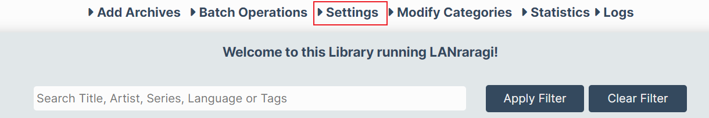

LANraragi 漫画服务器
序言
最近在研究家庭媒体库，教程大多以 NAS 为主机，实际上大多数软件都跑在 Docker 上。
现在有如下看漫画/同人志的需求：
- 电脑上存有大量的漫画的压缩包，想要各种设备能访问这些资源。—— 服务端软件，能够以 HTTP 的方式传输图片。
- 漫画的目录管理以我为主，而不能以服务端软件的规则为主。
- 手机 / pad 浏览漫画时，操作方便易用。—— 客户端好用，或者直接提供 web 端。
- 客户端有随机选择漫画功能。—— 收集的漫画太多了，出于消磨时间的目的，随便挑一本看最方便。
综上，我选择了 LANraragi。尽管 Komga、Kavita 和 Tachidesk (Sorayomi) 也都是开源的漫画服务器，但都不尽如人意。
这篇文章是对官方文档的一些摘录，以及我自己使用的一些心得。
LANraragi
LANraragi 提供很多功能，但我需要的不多：
| 功能 | 是否需要 |
|---|---|
| 本地上传漫画 | ✅ |
| 网上下载漫画 | ❌ |
| 添加元数据（主要是打 tag） | ❌ |
所有漫画都是我自己本地上传的。我只是要看漫画，不需要通过 tag 分类漫画。
安装
Docker compose:
1 | version: "3" |
/home/koyomi/lanraragi/database是 LANraragi 存放 Redis 数据的目录。创建一个 volume 即可/home/koyomi/lanraragi/content目录存放：- 所有漫画压缩包。LANraragi 可以递归地扫描子目录 —— 文件管理以我为主；
- 漫画的缩略图，默认存放在
/home/koyomi/lanraragi/content/thumb下；
- 由于缩略图目录可以改，因此
content实际只存放我自己的所有资源。我把权限设置为只读，直接映射主机存放漫画压缩包的目录。LANraragi 会自己检测文件变动，我只要像以前一样收集资源即可。
- 用 Docker compose 是因为可以记录启动命令，方便之后复用。
- Portainer 的 Stacks 就是存放 Docker-compose 文件的地方。修改 Docker-compose 后，Portainer 会重新部署，很方便。（本质上就是 down + up，但数据不会丢，因为存放在 volume 里面）
配置
第一次启动，admin 的密码是 kamimamita。登录后进入配置页面，

首先提醒一下，改了配置不要忘记保存：

先修改初始密码：
其他配置如下：
Global Settings
- 分页数设置为 20，默认的 100 太多了。
- 其实不太需要阅读记录功能，就把存储任务放在客户端了，节省服务器资源
Archive Files
不用改
Tags and Thumbnails
- 重点是改缩略图目录。因为 docker 启动时的只读映射，以及默认的缩略图目录在
content里。 - 把两个关于 tag 的选项关掉
Background Workers
这个是用来监听 content 目录中漫画资源变动的。如果没有及时处理新的资源，可以重启。
Plugin Configuration

把这个关了，不需要
所有插件默认都是关闭的，问题不大。
使用
首次挂载自己的漫画资源到 content 时，LANraragi 需要大量资源处理元数据和缩略图。根据 Portainer 的监视数据，使用了 2-3GB 内存，2000% 的 CPU （不太懂这个 CPU 资源是怎么统计的）。
首页的功能：
- 搜索；
- 每次显示随机加载的漫画；
- 列表模式 / 缩略图模式
阅读器配置：
1️⃣默认是分页模式
2️⃣我更喜欢垂直浏览模式：
设备共享
Docker 运行在 Linux 虚拟机中，由于 Docker 端口映射，本机可以通过虚拟机的 IP 访问 LANraragi 。
虚拟机 NAT 穿透
如果要用其他设备访问 LANraragi，则需要通过 NAT 穿透将虚拟机的端口映射到主机的端口：

如图配置，将 虚拟机的 43000 端口映射到主机的 43000 端口
本机防火墙
Windows 的防火墙默认会屏蔽该端口，配置新的规则即可：


在入站规则里新建规则：给专用网络（家庭内网）开放 43000/tcp
之后手机就可以通过 电脑IP:43000 访问 LANraragi 了。
手机端 web 界面的首页不咋地，可以用官方推荐的客户端。但我只要随机阅读，所以问题不大，看漫画的界面好用就行了。